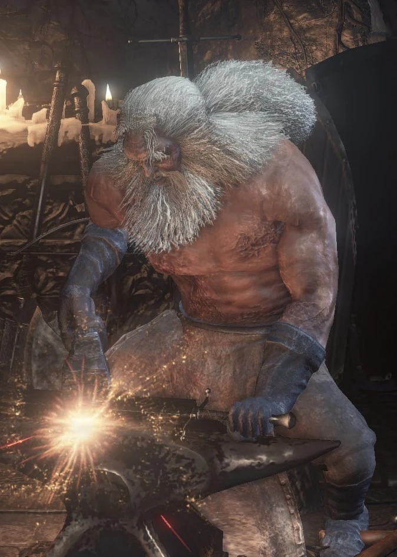

A Fire Keeper é responsável por ajudar o jogador a **aumentar a quantidade de Estus Shards**, fundamental para a sobrevivência e progressão do personagem.
Ela também fornece informações sobre a história do mundo, revela aspectos da lore e é essencial para alcançar certos finais do jogo.
Sua presença é constante no **Santuário do Elo de Fogo**, tornando-a um NPC indispensável para qualquer jogador que queira completar o jogo e alcançar a platina.
(Fonte: Dark Souls Wiki)
Fire Keepers são figuras místicas que guardam o fogo sagrado, mantendo o ciclo da chama. Elas possuem conhecimento profundo sobre os Lordes das Cinzas e as forças que regem Lothric. Cada Fire Keeper tem sua própria história e ligação com o jogador, fornecendo não apenas suporte, mas também contexto narrativo.
| Item | Condição | Utilidade |
|---|---|---|
| Fragmentos de Estus | Entregues à Fire Keeper | Aumenta a quantidade de frascos de Estus do jogador |
| Almas | Usadas para nivelar atributos com a Fire Keeper | Permite melhorar força, destreza, inteligência, fé e outros atributos |
Resumo: A Fire Keeper é um NPC essencial, garantindo a progressão do personagem através do aumento do Estus e fornecendo contexto narrativo vital para entender Lothric e preparar-se para os desafios finais.

Blacksmith Andre é o ferreiro principal do Santuário do Elo de Fogo, permitindo que o jogador **aprimorar armas e equipamentos**, um passo crucial para a sobrevivência e progresso.
Ele também fornece serviços de **reparos e transposição de armas**, sendo indispensável para builds focadas em armas específicas e para alcançar a platina.
Sua presença é fixa no Santuário, e ele é considerado o NPC de suporte mais importante após a Fire Keeper.
(Fonte: Dark Souls Wiki)
Andre é um ferreiro experiente, cuja habilidade é reconhecida em todo Lothric. Ele representa o artesanato e a tradição, mantendo a cultura das armas e equipamentos vivos mesmo em tempos de decadência. Sua dedicação ao fogo e ao trabalho garante que os aventureiros possam enfrentar os desafios sem limitações.
| Item | Condição | Utilidade |
|---|---|---|
| Armas aprimoradas | Fornecidas ao utilizar Titanita ou almas de chefe | Permite maior dano e eficiência em combate |
| Escudos e equipamentos reparados | Qualquer arma ou escudo danificado | Evita penalidades de durabilidade, essencial para troféus de combate |
| Armas de chefe (Transposição) | Necessário entregar almas de chefes a Andre | Criação de armas únicas e poderosas, importantes para builds e troféus |
Resumo: Blacksmith Andre é essencial para qualquer jogador, garantindo aprimoramento de armas e equipamentos, permitindo builds completas e contribuindo diretamente para a obtenção da platina.
A Shrine Handmaid é a comerciante fixa do Santuário do Elo de Fogo. Ela permite que o jogador **compre e venda itens**, como consumíveis, armas e materiais essenciais para o progresso e troféus.
Interagir com ela é crucial para **gerenciar inventário, adquirir recursos raros** e preparar-se para áreas desafiadoras.
Sua loja está sempre disponível, tornando-a um NPC de suporte indispensável.
(Fonte: Dark Souls Wiki)
A Shrine Handmaid representa os comerciantes que permanecem fiéis ao Santuário, ajudando os aventureiros a sobreviver e prosperar. Sua presença constante reflete a importância do comércio e do suporte logístico mesmo em um mundo em decadência.
| Item | Condição | Utilidade |
|---|---|---|
| Consumíveis | Disponíveis para compra | Incluem frascos de Estus, bombas e outros itens essenciais para sobrevivência |
| Armas e Escudos | Disponíveis para compra | Permite melhorar builds e se preparar para chefes e áreas difíceis |
| Materiais de aprimoramento | Disponíveis para compra | Necessários para reforjar armas e equipamentos com Blacksmith Andre |
Resumo: A Shrine Handmaid é o NPC de comércio essencial no Santuário do Elo de Fogo, fornecendo recursos, armas e materiais necessários para builds, upgrades e preparação para a platina.

Ludleth de Courland é um dos cinco Senhores das Cinzas que retornam ao Santuário do Elo do Fogo. Ao contrário dos demais, ele permanece voluntariamente em seu trono, oferecendo seus serviços ao jogador. Ele é essencial para o sistema de Transposição de Almas, que permite transformar almas de chefes em armas, feitiços e anéis únicos.
Encontra-se sentado em seu trono no Santuário do Elo do Fogo desde o início do jogo, logo após derrotar Iudex Gundyr e acessar o local pela primeira vez. Seu trono está localizado à esquerda da Fire Keeper, identificado pela inscrição “Ludleth the Exiled”.
Ludleth é conhecido como o “Pequeno Senhor das Cinzas”, exilado de Courland. Diferente dos outros Lordes, ele aceitou o fardo da chama por vontade própria, o que o torna único entre seus pares. Sua fala e comportamento sugerem um profundo arrependimento e sabedoria, sendo um dos poucos personagens que compreende o verdadeiro significado do ciclo do fogo e da escuridão.
| Item | Condição | Utilidade |
|---|---|---|
| Serviço de Transposição | Disponível após entregar a Transposing Kiln | Permite criar armas e feitiços de almas de chefes |
| Almas de Chefes | Usadas com Ludleth | Podem ser transpostas em itens únicos |
| Diálogo especial de fim de jogo | Dependendo do final escolhido | Fornece lore adicional sobre o ciclo do fogo |
Resumo: Ludleth de Courland é indispensável para a platina de Dark Souls III, pois sem ele não é possível obter todas as armas e feitiços únicos oriundos da transposição de almas de chefes.
Orbeck de Vinheim é um feiticeiro errante proveniente da renomada escola de Vinheim. Ele é um mestre das feitiçarias e um dos NPCs mais importantes para jogadores que pretendem completar todos os feitiços e conquistar a platina. Orbeck oferece poderosos feitiços e uma questline que afeta diretamente o progresso mágico do jogador.
Orbeck é encontrado pela primeira vez nas Ruínas do Caminho dos Sacrifícios (Road of Sacrifices). Para encontrá-lo, siga o caminho da fogueira “Crucifixion Woods” e entre em uma torre ao fundo, próxima aos magos de cristal. Ele estará sentado lendo um livro. O jogador deve ter no mínimo 10 de Inteligência para convencê-lo a ir ao Santuário do Elo do Fogo.
Orbeck foi um estudante talentoso de Vinheim, mas banido por mergulhar em artes arcanas proibidas. Seu conhecimento e ambição o afastaram da academia, levando-o a buscar novos pupilos e compreender os limites da feitiçaria. Suas falas e destino final refletem a tragédia comum entre os sábios de Lothric: a busca por poder que termina em solidão e morte.
| Item | Condição | Utilidade |
|---|---|---|
| Feitiços e Scrolls | Vendidos após entregar pergaminhos | Necessários para troféus e builds mágicas |
| Orbeck’s Ashes | Obtidas ao encontrar seu corpo na Grand Archives | Permite comprar seus feitiços restantes com a Handmaid |
| Young Dragon Ring / Bellowing Dragoncrest Ring | Obtidos durante sua questline | Aumentam o dano de feitiçarias |
Resumo: Orbeck é um NPC essencial para builds de magia e troféus relacionados a feitiços. Completar sua quest é obrigatório para conquistar 100% das feitiçarias e, portanto, indispensável para a platina.
Yoel de Londor é um dos primeiros NPCs ligados à trilha de Londor e ao final da Usurpação do Fogo. Ele é um peregrino que o jogador encontra após o portão da Muralha de Lothric, ajoelhado entre cadáveres. Sua função principal é permitir que o jogador receba as marcas negras de Londor (Hollowing) e aumente o poder gratuitamente algumas vezes.
Encontrado logo após derrotar o Iudex Gundyr e avançar pela Muralha de Lothric. Ele está ajoelhado à direita de uma ponte quebrada, antes da primeira fogueira principal da muralha. Após falar com ele e aceitar seu serviço, ele se muda para o Firelink Shrine.
Yoel é um dos peregrinos de Londor, terra dos mortos-vivos. Ele busca um Senhor das Cinzas que aceite a verdade de Londor e se torne o novo soberano das trevas. Sua devoção a Londor o leva a sacrificar-se para garantir a aparição de Yuria, que dá continuidade à missão de dominar a chama e libertar os mortos-vivos.
| Item | Como Obter | Utilidade |
|---|---|---|
| Níveis gratuitos (Draw Out True Strength) | Fale com ele em Firelink Shrine e escolha a opção até 5 vezes | Permite aumentar seu nível sem custo até certo ponto |
| Ligação com Yuria de Londor | Após sua morte, Yuria aparece no mesmo local | Desbloqueia o caminho para o final “Usurpation of Fire” |

Yuria de Londor é uma poderosa agente de Londor que aparece em Firelink Shrine após a morte de Yoel de Londor. Ela é uma figura crucial para alcançar o final “Usurpation of Fire”, representando o lado sombrio e político dos mortos-vivos. Yuria guia o jogador pelo caminho dos “Lordes das Trevas” e oferece itens e magias relacionados à fé e à Hollowing.
Surge no Firelink Shrine no mesmo local onde Yoel de Londor estava, após sua morte natural (caso o jogador tenha aceitado seus cinco aumentos de poder). Yuria permanece ali até o final do jogo, desde que o jogador não rompa seu pacto com Londor.
Yuria é uma das três irmãs de Londor, junto de Liliane e Elfriede. Ela é uma defensora da filosofia da humanidade pura — a crença de que os mortos-vivos devem governar sobre as cinzas e reinar nas trevas. Sua fé em Londor é inabalável, e ela vê no protagonista o potencial para se tornar o verdadeiro Rei das Trevas. Yuria representa o equilíbrio entre manipulação e devoção, sendo uma das figuras mais misteriosas da trilogia.
| Item | Como Obter | Utilidade |
|---|---|---|
| Dark Hand | Comprado diretamente com Yuria | Arma mágica que drena HP dos inimigos e é útil em builds de fé e sorte |
| Itens de feitiço de Londor | Disponíveis em seu inventário | Permitem usar milagres e magias ligados à escuridão |
| Ritual de Casamento Sombrio | Parte da quest com Anri de Astora | Necessário para desbloquear o final “Usurpation of Fire” |

Anri de Astora é um dos personagens mais importantes de Dark Souls III, aparecendo ao longo de várias áreas principais. Sua jornada está intimamente ligada ao jogador e pode levar a diferentes destinos, incluindo o final “Usurpation of Fire”. A forma e o gênero de Anri variam de acordo com o sexo do protagonista.
A primeira aparição de Anri ocorre nas Catacumbas de Carthus, acompanhada de seu companheiro Horace the Hushed. Antes disso, ela pode ser encontrada no Firelink Shrine após desbloquear certas áreas (dependendo do progresso de Yoel e Yuria de Londor). Anri também é vista no Road of Sacrifices e em Irithyll of the Boreal Valley dependendo das escolhas feitas.
Anri vem de Astora, uma terra associada a heróis e cavaleiros sagrados. Assim como o jogador, busca derrotar os Lordes das Cinzas e dar fim ao ciclo da chama. Seu destino é profundamente trágico — seja pela corrupção causada pela escuridão de Londor ou pela perda de seu parceiro Horace. Anri representa o dilema moral da série: seguir o dever e a luz ou aceitar a escuridão como redenção.
| Item | Como Obter | Utilidade |
|---|---|---|
| Espada Direita de Anri | Obtida após a conclusão de sua questline | Escala com Sorte, ideal para builds de Hollow |
| Conjunto de Armadura de Anri | Vendido pela Shrine Handmaid após a morte de Anri | Peitoral leve com boa resistência a magia |
| Estus Shard / Itens de Quest | Encontrados próximos ao corpo de Anri, dependendo do desfecho | Itens diversos úteis para progressão |
Horace, o Silencioso, é um cavaleiro leal de Astora e companheiro de Anri de Astora. Embora não fale, ele desempenha um papel crucial na questline de Anri e no final “Usurpation of Fire”. Horace aparece em diversas áreas do jogo e seu destino influencia diretamente o progresso e desfecho da missão de Anri. (Fonte: Dark Souls Wiki)
Horace é inicialmente encontrado nas Catacumbas de Carthus, acompanhado de Anri. Ele também pode aparecer no Firelink Shrine após certas condições de progresso, e em áreas subsequentes como o Road of Sacrifices. Mais tarde, ele é encontrado na Smouldering Lake como inimigo hostil, dependendo das escolhas do jogador.
Horace representa a lealdade inabalável dos cavaleiros de Astora. Sua devoção a Anri mostra a ética de proteção e sacrifício mesmo diante de perigos mortais. Sua queda ou sobrevivência demonstra os efeitos da corrupção e da escuridão em Lothric, refletindo os dilemas morais centrais do jogo.
| Item | Como Obter | Utilidade |
|---|---|---|
| Conjunto de Armadura de Horace | Dropado ao derrotar Horace na Smouldering Lake | Armadura simbólica de Astora, útil para builds de força |
| Escudo de Horace | Obtido junto com sua armadura | Escudo resistente, útil para defesa física e bloqueio |
| Blue Sentinels Covenant | Falando com Horace no Firelink Shrine antes de eventos hostis | Permite ingressar no pacto dos Sentinelas Azuis |
Fonte: Dark Souls Wiki
Greirat é um ladrão e comerciante que pode ser recrutado para enviar em saques ao redor de Lothric. Ele desempenha um papel importante na progressão de equipamentos e itens consumíveis do jogador, além de influenciar conquistas e troféus relacionados a sua questline. Mantê-lo vivo é essencial para aproveitar completamente seus saques e vendas. (Fonte: Dark Souls Wiki)
Greirat é encontrado pela primeira vez preso em uma cela do Assentamento dos Mortos-Vivos. Após libertá-lo, ele se muda para o Firelink Shrine, onde passa a oferecer itens para venda e aceita missões de saque.
Greirat é um ladrão astuto e pragmático, focado em sobrevivência e lucro. Sua história mostra como personagens do submundo de Lothric interagem com o jogador, oferecendo vantagens estratégicas em troca de liberdade e confiança. Ele representa o equilíbrio entre risco e recompensa dentro do universo Dark Souls III.
| Item | Como Obter | Utilidade |
|---|---|---|
| Itens de Saque | Enviando Greirat em missões de saque | Incluem armas, feitiços, consumíveis e titanita |
| Equipamentos Vendidos | Disponível no Firelink Shrine após libertá-lo | Itens raros e úteis para builds diversas |
Fonte: Dark Souls Wiki
Siegward de Catarina é um cavaleiro leal e aliado recorrente do jogador em várias áreas de Lothric. Ele possui uma questline envolvente que inclui encontros em chefes, resgates e recompensas significativas. Manter Siegward vivo e ajudá-lo em seus objetivos é essencial para completar sua história e obter itens especiais. (Fonte: Dark Souls Wiki)
A primeira aparição de Siegward ocorre na torre de Yhorm, no Road of Sacrifices. Ele pode ser encontrado posteriormente em diferentes áreas, incluindo o Assentamento dos Mortos-Vivos e o High Wall of Lothric, dependendo do progresso do jogador.
Siegward representa o arquétipo do cavaleiro nobre e persistente, que valoriza a lealdade e a honra acima de tudo. Sua história mostra a camaradagem e os laços forjados em Lothric, reforçando o tema de companheirismo mesmo em um mundo sombrio e implacável.
| Item | Como Obter | Utilidade |
|---|---|---|
| Conjunto de Armadura de Siegward | Obtido após completar sua questline com sucesso | Armadura completa com bom equilíbrio de defesa física e mágica |
| Estus Shard | Disponível em pontos específicos durante a quest | Incrementa o número de frascos de Estus |
Fonte: Dark Souls Wiki
Sirris de Lothric é uma cavaleira dedicada que ajuda o jogador em várias áreas através de sua guilda e missões de invasão. Sua questline envolve encontros específicos, ajuda em chefes e recompensas de equipamento. Completar sua história garante acesso a eventos únicos e influencia finais e conquistas. (Fonte: Dark Souls Wiki)
Sirris é encontrada inicialmente no Firelink Shrine, perto da fogueira central. Após desbloquear certas áreas e progredir na história, ela pode ser encontrada em locais como o High Wall of Lothric e o Assentamento dos Mortos-Vivos para eventos de invasão e ajuda ao jogador.
Sirris representa a lealdade e devoção dos Cavaleiros de Lothric, comprometida em ajudar aliados e defender os ideais de sua guilda. Sua história reforça temas de amizade, dever e sacrifício dentro do mundo de Dark Souls III.
| Item | Como Obter | Utilidade |
|---|---|---|
| Conjunto de Armadura de Sirris | Obtido ao completar sua questline com sucesso | Armadura leve com bom equilíbrio entre defesa física e resistência mágica |
| Anel ou item de recompensa especial | Concluindo interações-chave e ajudando-a em combates | Benefícios para combate e progressão de build |
Fonte: Dark Souls Wiki
Leonhard de Londor é um assassino que oferece ao jogador a oportunidade de ingressar no Pacto dos Assassinos. Sua questline envolve pactos, invocações, e eventos que podem alterar o curso da história e desbloquear finais alternativos. Participar de suas missões é essencial para quem busca completar a platina ou explorar completamente os finais de Dark Souls III. (Fonte: Dark Souls Wiki)
Leonhard é encontrado pela primeira vez no Firelink Shrine, após avançar em áreas como o Road of Sacrifices e o Cathedral of the Deep. Ele se mantém disponível para interações posteriores em pontos específicos do jogo.
Leonhard representa os ideais sombrios de Londor, focado em manipulação, assassinato e pactos para alcançar poder. Sua presença destaca a moral cinzenta do mundo de Dark Souls III e a influência dos pactos na jornada do jogador.
| Item | Como Obter | Utilidade |
|---|---|---|
| Armadura e equipamentos de Londor | Disponível ao completar a questline de Leonhard | Equipamentos únicos com bom equilíbrio para builds de assassino |
| Anel do Pacto dos Assassinos | Recebido ao ingressar e completar tarefas do pacto | Benefícios em combate e progressão de build focada em furtividade |
Fonte: Dark Souls Wiki

Patches é conhecido por sua natureza traiçoeira, mas também pode se tornar um aliado valioso ao jogador. Sua questline envolve enganos, traições, mas também oportunidades de comércio e acesso a itens especiais. Seguir corretamente sua história garante recompensas exclusivas e influência em eventos do jogo. (Fonte: Dark Souls Wiki)
Patches aparece pela primeira vez no High Wall of Lothric em um encontro emboscado. Após o primeiro encontro, ele pode ser encontrado em outras áreas, como o Assentamento dos Mortos-Vivos e Irithyll of the Boreal Valley, dependendo do progresso do jogador.
Patches é o clássico trapaceiro do universo Dark Souls, simbolizando o risco e a desconfiança em um mundo perigoso. Sua presença mostra que mesmo inimigos iniciais podem se tornar aliados úteis se o jogador fizer escolhas cuidadosas. Ele representa astúcia, humor negro e a ambiguidade moral presente na série.
| Item | Como Obter | Utilidade |
|---|---|---|
| Itens de Comércio Exclusivos | Disponíveis após aceitar Patches como aliado | Incluem consumíveis raros, armas e anéis úteis |
| Acesso a atalhos e áreas bloqueadas | Ao completar encontros-chave | Facilita exploração e coleta de itens |
Fonte: Dark Souls Wiki